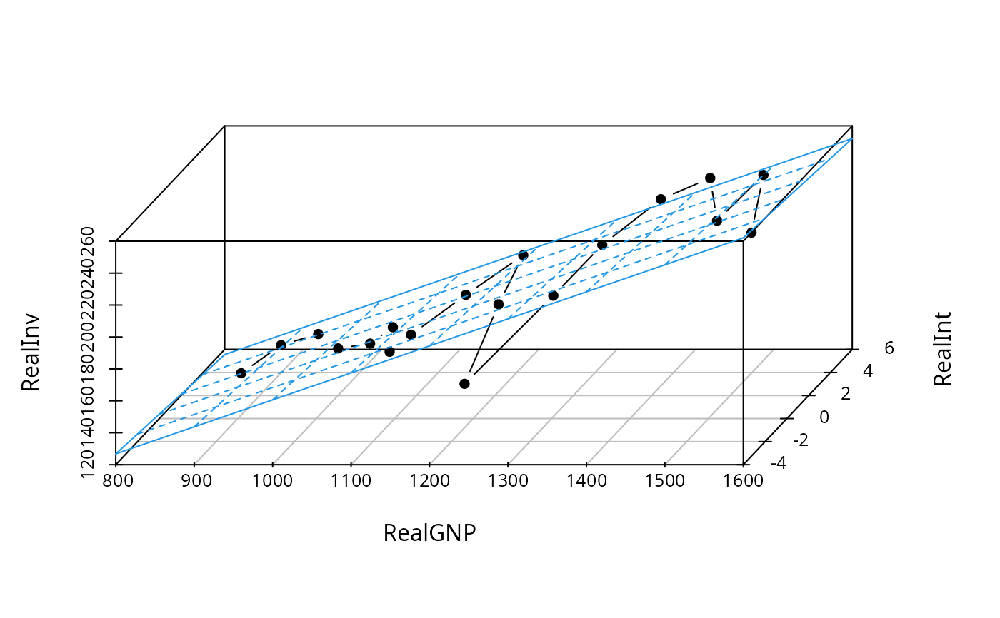

US Investment Data
Investment.RdUS data for fitting an investment equation.
data(Investment)
Format
An annual time series from 1963 to 1982 with 7 variables.
- GNP
nominal gross national product (in billion USD),
- Investment
nominal gross private domestic investment (in billion USD),
- Price
price index, implicit price deflator for GNP,
- Interest
interest rate, average yearly discount rate charged by the New York Federal Reserve Bank,
- RealGNP
real GNP (= GNP/Price),
- RealInv
real investment (= Investment/Price),
- RealInt
approximation to the real interest rate (= Interest - 100 * diff(Price)/Price).
Source
Table 15.1 in Greene (1993)
References
Greene W.H. (1993). Econometric Analysis, 2nd edition. Macmillan Publishing Company, New York.
Executive Office of the President (1984). Economic Report of the President. US Government Printing Office, Washington, DC.
Examples
## Willam H. Greene, Econometric Analysis, 2nd Ed. ## Chapter 15 ## load data set, p. 411, Table 15.1 data(Investment) ## fit linear model, p. 412, Table 15.2 fm <- lm(RealInv ~ RealGNP + RealInt, data = Investment) summary(fm) #> #> Call: #> lm(formula = RealInv ~ RealGNP + RealInt, data = Investment) #> #> Residuals: #> Min 1Q Median 3Q Max #> -34.987 -6.638 0.180 10.408 26.288 #> #> Coefficients: #> Estimate Std. Error t value Pr(>|t|) #> (Intercept) -12.53360 24.91527 -0.503 0.622 #> RealGNP 0.16914 0.02057 8.224 3.87e-07 *** #> RealInt -1.00144 2.36875 -0.423 0.678 #> --- #> Signif. codes: 0 ‘***’ 0.001 ‘**’ 0.01 ‘*’ 0.05 ‘.’ 0.1 ‘ ’ 1 #> #> Residual standard error: 17.21 on 16 degrees of freedom #> (1 observation deleted due to missingness) #> Multiple R-squared: 0.8141, Adjusted R-squared: 0.7908 #> F-statistic: 35.03 on 2 and 16 DF, p-value: 1.429e-06 #> ## visualize residuals, p. 412, Figure 15.1 plot(ts(residuals(fm), start = 1964), type = "b", pch = 19, ylim = c(-35, 35), ylab = "Residuals") sigma <- sqrt(sum(residuals(fm)^2)/fm$df.residual) ## maybe used df = 26 instead of 16 ?? abline(h = c(-2, 0, 2) * sigma, lty = 2) if(require(lmtest)) { ## Newey-West covariances, Example 15.3 coeftest(fm, vcov = NeweyWest(fm, lag = 4)) ## Note, that the following is equivalent: coeftest(fm, vcov = kernHAC(fm, kernel = "Bartlett", bw = 5, prewhite = FALSE, adjust = FALSE)) ## Durbin-Watson test, p. 424, Example 15.4 dwtest(fm) ## Breusch-Godfrey test, p. 427, Example 15.6 bgtest(fm, order = 4) } #> Loading required package: lmtest #> Loading required package: zoo #> #> Attaching package: ‘zoo’ #> The following objects are masked from ‘package:base’: #> #> as.Date, as.Date.numeric #> #> Breusch-Godfrey test for serial correlation of order up to 4 #> #> data: fm #> LM test = 12.07, df = 4, p-value = 0.01684 #> ## visualize fitted series plot(Investment[, "RealInv"], type = "b", pch = 19, ylab = "Real investment") lines(ts(fitted(fm), start = 1964), col = 4)## 3-d visualization of fitted model if(require(scatterplot3d)) { s3d <- scatterplot3d(Investment[,c(5,7,6)], type = "b", angle = 65, scale.y = 1, pch = 16) s3d$plane3d(fm, lty.box = "solid", col = 4) } #> Loading required package: scatterplot3d 